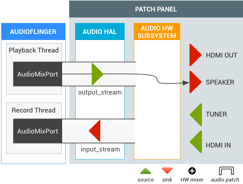
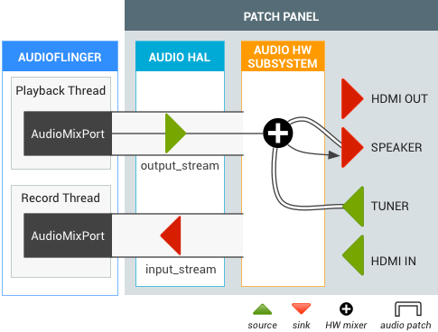
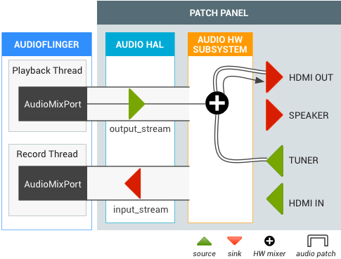

In this document
The TV Input Framework (TIF) manager works with the audio routing API to support flexible audio
path changes. When a System on Chip (SoC) implements the TV hardware abstraction layer (HAL), each
TV input (HDMI IN, Tuner, etc.) provides TvInputHardwareInfo that specifies AudioPort information for audio type and address.
- Physical audio input/output devices have a corresponding AudioPort.
- Software audio output/input streams are represented as AudioMixPort (child class of AudioPort).
The TIF then uses AudioPort information for the audio routing API.

Figure 1. TV Input Framework (TIF)
Requirements
A SoC must implement the audio HAL with the following audio routing API support:
| Audio Ports |
|
|---|---|
| Default Input | AudioRecord (created with DEFAULT input source) must seize virtual null input source for AUDIO_DEVICE_IN_DEFAULT acquisition on Android TV. |
| Device Loopback | Requires supporting an AUDIO_DEVICE_IN_LOOPBACK input that is a complete mix of all audio output of all the TV output (11Khz, 16bit mono or 48Khz, 16bit mono). Used only for audio capture. |
TV audio devices
Android supports the following audio devices for TV audio input/output.
system/media/audio/include/system/audio.h
Note: In Android 5.1 and earlier, the path to
this file is: system/core/include/system/audio.h
/* output devices */ AUDIO_DEVICE_OUT_AUX_DIGITAL = 0x400, AUDIO_DEVICE_OUT_HDMI = AUDIO_DEVICE_OUT_AUX_DIGITAL, /* HDMI Audio Return Channel */ AUDIO_DEVICE_OUT_HDMI_ARC = 0x40000, /* S/PDIF out */ AUDIO_DEVICE_OUT_SPDIF = 0x80000, /* input devices */ AUDIO_DEVICE_IN_AUX_DIGITAL = AUDIO_DEVICE_BIT_IN | 0x20, AUDIO_DEVICE_IN_HDMI = AUDIO_DEVICE_IN_AUX_DIGITAL, /* TV tuner input */ AUDIO_DEVICE_IN_TV_TUNER = AUDIO_DEVICE_BIT_IN | 0x4000, /* S/PDIF in */ AUDIO_DEVICE_IN_SPDIF = AUDIO_DEVICE_BIT_IN | 0x10000, AUDIO_DEVICE_IN_LOOPBACK = AUDIO_DEVICE_BIT_IN | 0x40000,
Audio HAL extension
The Audio HAL extension for the audio routing API is defined by following:
system/media/audio/include/system/audio.h
Note: In Android 5.1 and earlier, the path to
this file is: system/core/include/system/audio.h
/* audio port configuration structure used to specify a particular configuration of an audio port */
struct audio_port_config {
audio_port_handle_t id; /* port unique ID */
audio_port_role_t role; /* sink or source */
audio_port_type_t type; /* device, mix ... */
unsigned int config_mask; /* e.g AUDIO_PORT_CONFIG_ALL */
unsigned int sample_rate; /* sampling rate in Hz */
audio_channel_mask_t channel_mask; /* channel mask if applicable */
audio_format_t format; /* format if applicable */
struct audio_gain_config gain; /* gain to apply if applicable */
union {
struct audio_port_config_device_ext device; /* device specific info */
struct audio_port_config_mix_ext mix; /* mix specific info */
struct audio_port_config_session_ext session; /* session specific info */
} ext;
};
struct audio_port {
audio_port_handle_t id; /* port unique ID */
audio_port_role_t role; /* sink or source */
audio_port_type_t type; /* device, mix ... */
unsigned int num_sample_rates; /* number of sampling rates in following array */
unsigned int sample_rates[AUDIO_PORT_MAX_SAMPLING_RATES];
unsigned int num_channel_masks; /* number of channel masks in following array */
audio_channel_mask_t channel_masks[AUDIO_PORT_MAX_CHANNEL_MASKS];
unsigned int num_formats; /* number of formats in following array */
audio_format_t formats[AUDIO_PORT_MAX_FORMATS];
unsigned int num_gains; /* number of gains in following array */
struct audio_gain gains[AUDIO_PORT_MAX_GAINS];
struct audio_port_config active_config; /* current audio port configuration */
union {
struct audio_port_device_ext device;
struct audio_port_mix_ext mix;
struct audio_port_session_ext session;
} ext;
};
hardware/libhardware/include/hardware/audio.h
struct audio_hw_device {
:
/**
* Routing control
*/
/* Creates an audio patch between several source and sink ports.
* The handle is allocated by the HAL and should be unique for this
* audio HAL module. */
int (*create_audio_patch)(struct audio_hw_device *dev,
unsigned int num_sources,
const struct audio_port_config *sources,
unsigned int num_sinks,
const struct audio_port_config *sinks,
audio_patch_handle_t *handle);
/* Release an audio patch */
int (*release_audio_patch)(struct audio_hw_device *dev,
audio_patch_handle_t handle);
/* Fills the list of supported attributes for a given audio port.
* As input, "port" contains the information (type, role, address etc...)
* needed by the HAL to identify the port.
* As output, "port" contains possible attributes (sampling rates, formats,
* channel masks, gain controllers...) for this port.
*/
int (*get_audio_port)(struct audio_hw_device *dev,
struct audio_port *port);
/* Set audio port configuration */
int (*set_audio_port_config)(struct audio_hw_device *dev,
const struct audio_port_config *config);
Testing DEVICE_IN_LOOPBACK
To test DEVICE_IN_LOOPBACK for TV monitoring, use the following testing code. After running the
test, the captured audio saves to /sdcard/record_loopback.raw, where you can listen to
it using ffmeg.
<uses-permission android:name="android.permission.MODIFY_AUDIO_ROUTING" />
<uses-permission android:name="android.permission.WRITE_EXTERNAL_STORAGE" />
AudioRecord mRecorder;
Handler mHandler = new Handler();
int mMinBufferSize = AudioRecord.getMinBufferSize(RECORD_SAMPLING_RATE,
AudioFormat.CHANNEL_IN_MONO,
AudioFormat.ENCODING_PCM_16BIT);;
static final int RECORD_SAMPLING_RATE = 48000;
public void doCapture() {
mRecorder = new AudioRecord(MediaRecorder.AudioSource.DEFAULT, RECORD_SAMPLING_RATE,
AudioFormat.CHANNEL_IN_MONO, AudioFormat.ENCODING_PCM_16BIT, mMinBufferSize * 10);
AudioManager am = (AudioManager) getSystemService(Context.AUDIO_SERVICE);
ArrayList<AudioPort> audioPorts = new ArrayList<AudioPort>();
am.listAudioPorts(audioPorts);
AudioPortConfig srcPortConfig = null;
AudioPortConfig sinkPortConfig = null;
for (AudioPort audioPort : audioPorts) {
if (srcPortConfig == null
&& audioPort.role() == AudioPort.ROLE_SOURCE
&& audioPort instanceof AudioDevicePort) {
AudioDevicePort audioDevicePort = (AudioDevicePort) audioPort;
if (audioDevicePort.type() == AudioManager.DEVICE_IN_LOOPBACK) {
srcPortConfig = audioPort.buildConfig(48000, AudioFormat.CHANNEL_IN_DEFAULT,
AudioFormat.ENCODING_DEFAULT, null);
Log.d(LOG_TAG, "Found loopback audio source port : " + audioPort);
}
}
else if (sinkPortConfig == null
&& audioPort.role() == AudioPort.ROLE_SINK
&& audioPort instanceof AudioMixPort) {
sinkPortConfig = audioPort.buildConfig(48000, AudioFormat.CHANNEL_OUT_DEFAULT,
AudioFormat.ENCODING_DEFAULT, null);
Log.d(LOG_TAG, "Found recorder audio mix port : " + audioPort);
}
}
if (srcPortConfig != null && sinkPortConfig != null) {
AudioPatch[] patches = new AudioPatch[] { null };
int status = am.createAudioPatch(
patches,
new AudioPortConfig[] { srcPortConfig },
new AudioPortConfig[] { sinkPortConfig });
Log.d(LOG_TAG, "Result of createAudioPatch(): " + status);
}
mRecorder.startRecording();
processAudioData();
mRecorder.stop();
mRecorder.release();
}
private void processAudioData() {
OutputStream rawFileStream = null;
byte data[] = new byte[mMinBufferSize];
try {
rawFileStream = new BufferedOutputStream(
new FileOutputStream(new File("/sdcard/record_loopback.raw")));
} catch (FileNotFoundException e) {
Log.d(LOG_TAG, "Can't open file.", e);
}
long startTimeMs = System.currentTimeMillis();
while (System.currentTimeMillis() - startTimeMs < 5000) {
int nbytes = mRecorder.read(data, 0, mMinBufferSize);
if (nbytes <= 0) {
continue;
}
try {
rawFileStream.write(data);
} catch (IOException e) {
Log.e(LOG_TAG, "Error on writing raw file.", e);
}
}
try {
rawFileStream.close();
} catch (IOException e) {
}
Log.d(LOG_TAG, "Exit audio recording.");
}
Locate the captured audio file in /sdcard/record_loopback.raw and listen to it using
ffmeg:
adb pull /sdcard/record_loopback.raw ffmpeg -f s16le -ar 48k -ac 1 -i record_loopback.raw record_loopback.wav ffplay record_loopback.wav
Use cases
This section includes common use cases for TV audio.
TV tuner with speaker output
When a TV tuner becomes active, the audio routing API creates an audio patch between the tuner and the default output (e.g. the speaker). The tuner output does not require decoding, but final audio output is mixed with software output_stream.
Figure 2. Audio Patch for TV tuner with speaker output.
HDMI OUT during live TV
A user is watching live TV then switches to the HDMI audio output (Intent.ACTION_HDMI_AUDIO_PLUG) . The output device of all output_streams changes to the HDMI_OUT port, and the TIF manager changes the sink port of the existing tuner audio patch to the HDMI_OUT port.
Figure 3. Audio Patch for HDMI OUT from live TV.